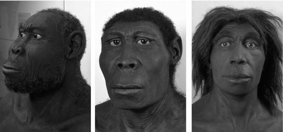
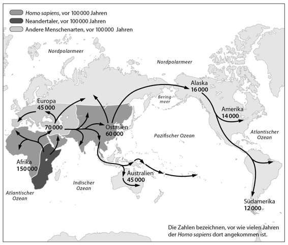
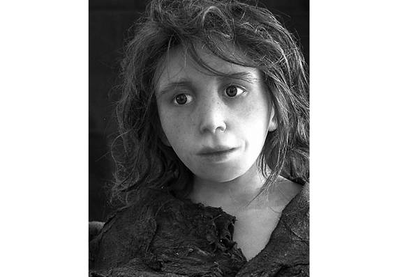

Kapitel 1
Ein ziemlich unauffälliges Tier
Vor rund 13,5 Milliarden Jahren entstanden Materie, Energie, Raum und Zeit in einem Ereignis namens Urknall. Die Geschichte dieser grundlegenden Eigenschaften unseres Universums nennen wir Physik.
Etwa 300000 Jahre später verbanden sich Materie und Energie zu komplexeren Strukturen namens Atome, die sich wiederum zu Molekülen zusammenschlossen. Die Geschichte der Atome, Moleküle und ihrer Reaktionen nennen wir Chemie.
Vor 3,8 Milliarden Jahren begannen auf einem Planeten namens Erde bestimmte Moleküle, sich zu besonders großen und komplexen Strukturen zu verbinden, die wir als Organismen bezeichnen. Die Geschichte dieser Organismen nennen wir Biologie.
Und vor gut 70000 Jahren begannen Organismen der Art Homo sapiens mit dem Aufbau von noch komplexeren Strukturen namens Kulturen. Die Entwicklung dieser Kulturen nennen wir Geschichte.
Die Geschichte der menschlichen Kulturen wurde von drei großen Revolutionen geprägt. Die kognitive Revolution vor etwa 70000 Jahren brachte die Geschichte überhaupt erst in Gang. Die landwirtschaftliche Revolution vor rund 12000 Jahren beschleunigte sie. Und die wissenschaftliche Revolution, die vor knapp 500 Jahren ihren Anfang nahm, könnte das Ende der Geschichte und der Beginn von etwas völlig Neuem sein. Dieses Buch erzählt, welche Konsequenzen diese drei Revolutionen für den Menschen und seine Mitlebewesen hatten und haben.
Menschen gab es schon lange vor dem Beginn der Geschichte. Die ersten menschenähnlichen Tiere betraten vor etwa 2,5 Millionen Jahren die Bühne. Aber über zahllose Generationen hinweg stachen sie nicht aus der Vielzahl der Tiere heraus, mit denen sie ihren Lebensraum teilten. Wenn wir 2 Millionen Jahre in die Vergangenheit reisen und einen Spaziergang durch Ostafrika unternehmen könnten, würden wir dort vermutlich Gruppen von Menschen begegnen, die äußerlich gewisse Ähnlichkeit mit uns haben. Besorgte Mütter tragen ihre Babys auf dem Arm, Kinder spielen im Matsch. Von irgendwoher dringt das Geräusch von Steinen, die aufeinandergeschlagen werden, und wir sehen einen ernst dreinblickenden jungen Mann, der sich in der Kunst der Werkzeugherstellung übt. Die Technik hat er sich bei zwei Männern abgeschaut, die sich gerade um einen besonders fein gearbeiteten Feuerstein streiten; knurrend und mit gefletschten Zähnen tragen sie eine weitere Runde im Kampf um die Vormachtstellung in der Gruppe aus. Währenddessen zieht sich ein älterer Herr mit weißen Haaren aus dem Trubel zurück und streift allein durch ein nahe gelegenes Waldstück, wo er von einer Horde Schimpansen überrascht wird.
Diese Menschen liebten, stritten, zogen ihren Nachwuchs auf und erfanden Werkzeuge – genau wie die Schimpansen. Niemand, schon gar nicht die Menschen selbst, konnte ahnen, dass ihre Nachfahren eines Tages über den Mond spazieren, Atome spalten, das Genom entschlüsseln oder Geschichtsbücher schreiben würden. Die prähistorischen Menschen waren unauffällige Tiere, die genauso viel oder so wenig Einfluss auf ihre Umwelt hatten wie Gorillas, Libellen oder Quallen.
Biologen teilen Lebewesen in verschiedene Arten ein. Tiere gehören derselben Art an, wenn sie sich miteinander paaren und fortpflanzungsfähige Nachkommen zeugen. Pferde und Esel haben einen gemeinsamen Vorfahren und viele gemeinsame Eigenschaften, doch was die Fortpflanzung angeht, haben sie kein Interesse aneinander. Man kann sie zwar dazu bringen, sich zu paaren, doch die Maultiere, die aus dieser Verbindung hervorgehen, sind unfruchtbar. Das ist ein Zeichen dafür, dass sie unterschiedlichen Arten angehören. Anders Bulldoggen und Cockerspaniel: Sie unterscheiden sich zwar äußerlich ganz erheblich, doch sie paaren sich sehr bereitwillig, und ihr Nachwuchs kann mit anderen Hunden neue Welpen zeugen. Bulldoggen und Cockerspaniel sind also Angehörige derselben Art, nämlich der Hunde.
Arten mit einem gemeinsamen Vorfahren werden oft zu Gattungen zusammengefasst. Löwen, Tiger, Leoparden und Jaguare sind beispielsweise unterschiedliche Arten der Gattung Panthera. Biologen geben Lebewesen zweiteilige lateinische Namen: der erste Teil bezeichnet die Gattung, der zweite die Art. Der Löwe heißt zum Beispiel Panthera leo: die Art Leo aus der Gattung der Panthera. Als Leser dieses Buchs gehören Sie vermutlich den Homo sapiens an – der Art Sapiens (weise) aus der Gattung Homo (Mensch).
Gattungen werden wiederum zu Familien zusammengefasst, zum Beispiel den Katzen (Löwen, Geparden, Hauskatzen), Hunden (Wölfe, Füchse, Schakale) oder Elefanten (Elefanten, Mammuts, Mastodonten). Alle Angehörigen einer Familie lassen sich auf einen gemeinsamen Urahn zurückführen. Alle Katzen, vom zahmsten Hauskätzchen zum wildesten Löwen, gehen auf einen gemeinsamen Katzenvorfahren zurück, der vor rund 25 Millionen Jahren lebte.
Natürlich gehört auch der Homo sapiens einer Familie an. Diese scheinbar so banale Tatsache war eines der bestgehüteten Geheimnisse der Geschichte. Der Homo sapiens tat nämlich lange so, als habe er nichts mit dem Rest der Tierwelt zu tun und sei ein Waisenkind ohne Geschwister und Vettern und vor allem ohne Eltern. Das ist natürlich nicht der Fall. Ob es uns gefällt oder nicht, wir gehören der großen und krawalligen Familie der Menschenaffen an. Unsere nächsten lebenden Verwandten sind Gorillas und Orang-Utans. Am allernächsten stehen uns jedoch die Schimpansen. Vor gerade einmal sechs Millionen Jahren brachte eine Äffin zwei Töchter zur Welt: Eine der beiden wurde die Urahnin aller Schimpansen, die andere ist unsere eigene Ur-Ur-Ur-Großmutter.
Leichen im Keller
Der Homo sapiens hat aber ein noch viel dunkleres Geheimnis gehütet. Wir haben nämlich nicht nur eine Horde von unzivilisierten Vettern. Es gab eine Zeit, in der wir auch eine Menge Brüder und Schwestern hatten. Wir nehmen zwar den Namen »Mensch« für uns allein in Anspruch, doch früher gab es auch eine ganze Reihe anderer Menschenarten. Menschen waren sie deshalb, weil sie der Gattung Homo angehörten, die vor rund 2,5 Millionen Jahren aus einer älteren Affengattung namens Australopithecus, dem »südlichen Affen«, hervorging. Vor rund 2 Millionen Jahren verließen diese Urmenschen ihre ursprüngliche Heimat in Ostafrika und machten sich auf den langen Marsch nach Nordafrika, Europa und Asien. Und da das Überleben in den verschneiten Wäldern Nordeuropas andere Fähigkeiten erfordert als im schwülen Dschungel Indonesiens, entwickelten sich die Auswanderergruppen in unterschiedliche Richtungen. Das Ergebnis waren verschiedene Arten, die von Wissenschaftlern mit jeweils eigenen, hochtrabend klingenden lateinischen Namen getauft wurden.
In Europa und Westasien entwickelte sich der Mensch zum Homo neanderthalensis, dem »Mensch aus dem Neandertal« oder kurz Neandertaler. Dieser Neandertaler war kräftiger gebaut und muskulöser als der moderne Mensch und bestens auf das Eiszeitklima in Eurasien eingestellt. Auf der indonesischen Insel Java lebte dagegen der Homo soloensis, der »Solo-Mensch«, der besser an das Leben in den Tropen angepasst war. Ebenfalls im indonesischen Archipel, auf der kleinen Insel Flores, lebten Menschen, die in der Presse gern salopp als »Hobbits« bezeichnet werden, die in der Wissenschaft jedoch als Homo floresiensis bekannt sind. Diese speerschwingenden Zwerge wurden nur einen Meter groß und wogen gerade einmal 25 Kilogramm. Feige waren sie trotzdem nicht: Sie machten sogar Jagd auf die Elefanten der Insel (wobei man dazusagen sollte, dass es sich um Zwergelefanten handelte). Die Weiten Asiens wurden schließlich vom Homo erectus bevölkert, dem »aufrecht gehenden Menschen«, der hier anderthalb Millionen Jahre lang überlebte und damit die langlebigste Menschenart aller Zeiten war.
Als Wissenschaftler im Jahr 2010 bei Ausgrabungen in der Denissowa-Höhle in Sibirien auf einen versteinerten Fingerknochen stießen, wurde ein weiteres Geschwisterchen entdeckt und damit vor dem Vergessen bewahrt. Genanalysen ergaben, dass es sich um eine bis dahin unbekannte Menschenart handelte, die den Namen Homo denisova erhielt. Wer weiß, wie viele Verwandte noch darauf warten, in anderen Höhlen, Klimaten und Inselreichen entdeckt zu werden.

2. Und so könnten unsere Geschwister ausgesehen haben. Von links: Homo rudolfensis (Ostafrika, vor rund 2 Millionen Jahren), Homo erectus (Asien, vor rund 2 Millionen Jahren, ausgestorben vor rund 50000 Jahren) und Homo neanderthalensis (Europa und Westasien, vor rund 400000 Jahren, ausgestorben vor rund 30000 Jahren). Es handelt sich jedoch um spekulative Rekonstruktionen, die mit gewisser Vorsicht zu genießen sind.
Während sich diese Menschen in Europa und Asien entwickelten, blieb die Evolution in Afrika natürlich nicht stehen. Die Wiege der Menschheit brachte zahlreiche neue Arten hervor, darunter den Homo rudolfensis, den »Menschen vom Rudolfsee«, den Homo ergaster, den »werkenden Menschen«, und schließlich unsere eigene Art, die wir in der für uns typischen Bescheidenheit Homo sapiens, den »weisen Menschen« getauft haben.
Einige dieser Menschenarten waren Riesen, andere Zwerge. Einige waren gefürchtete Jäger, andere friedliebende Vegetarier. Einige lebten auf einer einzigen Insel, andere durchstreiften ganze Kontinente. Aber sie alle gehörten der Gattung Homo an: Sie waren Menschen.
Lange glaubte man, dass diese Arten in einem langen Stammbaum aufeinanderfolgten: Aus dem ergaster ging der erectus hervor, aus dem erectus der Neandertaler und aus dem Neandertaler schließlich wir. Diese Vorstellung ist jedoch falsch und erweckt den irrigen Eindruck, dass immer nur eine Menschenart den Planeten bevölkerte und dass alle anderen Arten nichts anderes waren als Vorläufermodelle des modernen Menschen. In Wirklichkeit lebten zwei Millionen Jahre lang, bis vor rund 10000 Jahren, gleichzeitig mehrere Menschenarten auf unserem Planeten. Warum auch nicht? Heute existieren ja auch viele Arten von Füchsen, Bären oder Schweinen nebeneinander. Noch vor hunderttausend Jahren gab es mindestens sechs verschiedene Menschenarten. Diese Vielfalt ist viel weniger erstaunlich als die Tatsache, dass wir heute allein sind. Im Gegenteil, wenn wir heute die einzige verbliebene Menschenart sind, dann wirft das einige Fragen auf. Wie wir gleich noch sehen werden, könnte der Homo sapiens gute Gründe gehabt haben, die Erinnerung an seine Geschwister zu verdrängen.
Der Preis des Gehirns
Bei allen Unterschieden haben die verschiedenen Menschenarten einige entscheidende Gemeinsamkeiten, die sie überhaupt erst zu Menschen machen. Vor allem verfügen sie im Vergleich zu anderen Tieren über ungewöhnlich große Gehirne. Säugetiere mit einem Körpergewicht von 60 Kilogramm haben im Durchschnitt ein Gehirn mit einem Volumen von 200 Kubikzentimetern. Das Gehirn eines Homo sapiens dieses Gewichts misst dagegen stolze 1200 bis 1400 Kubikzentimeter. Die ersten Menschen, die vor 2,5 Millionen Jahren lebten, hatten zwar noch ein kleineres Gehirn, doch im Vergleich zu dem eines Leoparden, der etwa genauso viel wog, war es sehr groß. Im Laufe der Entwicklung sollte dieser Unterschied immer größer werden.
Rückblickend scheint es uns vollkommen logisch, dass die Evolution immer größere Gehirne hervorbrachte. Weil wir derart in unsere Intelligenz verliebt sind, gehen wir davon aus, dass mehr Hirnpower automatisch besser ist. Aber wenn dem so wäre, dann hätte die Evolution doch sicher auch Katzen hervorgebracht, die Differenzialgleichungen lösen können. Warum hat also im gesamten Tierreich nur die Gattung Homo einen derart leistungsfähigen Denkapparat entwickelt?
Tatsache ist, dass ein solch gewaltiges Gehirn auch gewaltige Kraft kostet. Schon rein körperlich ist es eine Last, zumal es in einem schweren Schädel herumgeschleppt werden muss. Vor allem aber frisst es Unmengen an Energie. Beim Homo sapiens macht das Gehirn zwar nur 2 bis 3 Prozent des gesamten Körpergewichts aus, doch im Ruhezustand verbraucht es sage und schreibe 25 Prozent der Körperenergie. Zum Vergleich: Bei anderen Affen sind es nur rund 8 Prozent. Unsere Vorfahren zahlten einen hohen Preis für ihr großes Gehirn: Erstens mussten sie mehr Zeit mit der Nahrungssuche zubringen, und zweitens bildeten sich ihre Muskeln zurück. Wie ein Staat, der den Militärhaushalt kürzt und in die Bildung investiert, lenkte der Mensch seine Energie von Muskelmasse in Hirnschmalz um. Dabei war keineswegs klar, dass dies in der Savanne eine kluge Überlebensstrategie war. Ein Homo sapiens kann einen Schimpansen zwar an die Wand diskutieren, doch der Affe kann den Menschen auseinandernehmen wie ein Stoffpüppchen.
Es scheint sich allerdings gelohnt zu haben, denn sonst hätten die Menschen mit ihren überdimensionierten Gehirnen schließlich nicht überlebt. Nur wie macht der Zuwachs an Hirn den Verlust an Muckis wett? Im Zeitalter von Albert Einstein mag diese Frage albern klingen, aber wir sollten nicht vergessen, dass Einstein noch ein recht junges Phänomen ist. Zwei Millionen Jahre lang wuchs das menschliche Gehirn zwar munter weiter, aber abgesehen von einigen Steinmessern und angespitzten Stöcken brachte es den Menschen recht wenig. Aus evolutionärer Sicht ist die Entwicklung des menschlichen Gehirns mindestens genauso paradox wie die Entwicklung von unhandlichen Pfauenfedern oder schweren Hirschgeweihen. Wozu der ganze Aufwand?
Eine andere menschliche Eigenheit ist der aufrechte Gang. Auf zwei Beinen stehend konnten unsere Vorfahren in der Savanne besser nach Futter oder Feinden Ausschau halten. Und die Arme, die nun nicht mehr zur Fortbewegung gebraucht wurden, ließen sich zu anderen Zwecken nutzen, etwa um Steine zu werfen oder Zeichen zu geben.
Nachdem die Hände durch den zweibeinigen Gang frei geworden waren, ließen sie sich zu allen möglichen Tätigkeiten verwenden. Je mehr sie bewerkstelligen konnten, umso erfolgreicher wurden ihre Besitzer, weshalb die Evolution eine zunehmende Konzentration von Nerven und fein aufeinander abgestimmten Muskeln in Händen und Fingern förderte. So kommt es, dass wir mit unseren Händen filigranste Tätigkeiten ausführen können. Vor allem können wir komplizierte Werkzeuge herstellen und benutzen. Die ältesten Hinweise auf den Gebrauch von Werkzeugen reichen 2,5 Millionen Jahre zurück, und wenn Archäologen einen neuen Fund machen, sind Spuren ihrer Herstellung und Verwendung ein entscheidender Hinweis, dass es sich tatsächlich um frühe Menschen handelt.
Aber auch der aufrechte Gang hatte seine zwei Seiten. Unsere äffischen Vorfahren hatten über Jahrmillionen hinweg ein Skelett entwickelt, das für den Gang auf vier Beinen ausgelegt war und nur einen relativ leichten Kopf zu tragen hatte. Die Umstellung zum aufrechten Gang stellte eine beachtliche Herausforderung dar, zumal das Gestell einen immer schwereren Schädel tragen musste. Der Preis für die bessere Sicht und fleißige Hände waren Rückenschmerzen und steife Hälse.
Die Menschenweibchen kam die Umstellung noch teurer zu stehen. Der aufrechte Gang verlangte schmalere Hüften und damit einen engeren Geburtskanal – und das obwohl gleichzeitig die Köpfe der Säuglinge immer größer wurden. Daher liefen sie zunehmend Gefahr, die Geburt ihres Nachwuchses nicht zu überleben. Die Weibchen, die ihre Jungen zu einem früheren Zeitpunkt zur Welt brachten, als der Kopf noch verhältnismäßig klein und formbar war, überlebten eher und bekamen mehr Nachwuchs. Auf diese Weise sorgte ein Prozess der natürlichen Auslese dafür, dass die Kinder immer früher geboren wurden. Im Vergleich zu anderen Tieren sind menschliche Säuglinge Frühgeburten: Sie kommen halbfertig zur Welt, wenn überlebenswichtige Systeme noch unterentwickelt sind. Ein Fohlen steht kurz nach der Geburt auf eigenen Beinen, und ein Katzenjunges fängt im Alter von wenigen Wochen an, seine Umwelt zu erkunden. Menschenjunge sind dagegen bei Geburt völlig hilflos und müssen von ihren Eltern über Jahre hinweg ernährt, beschützt und aufgezogen werden.
Dieser Tatsache verdankt die Menschheit ihre außergewöhnlichen Fähigkeiten, aber auch viele der für sie typischen Schwierigkeiten. Alleinerziehende Mütter sind kaum in der Lage, die Nahrung für sich und ihren Nachwuchs heranzuschaffen, während sie ihre quäkenden Kinder im Schlepptau haben. Die Aufzucht der Sprösslinge erfordert konstante Unterstützung von Verwandten und Nachbarn. Zur Erziehung eines Kindes ist ein ganzer Stamm erforderlich. Daher hat die Evolution diejenigen bevorzugt, die in der Lage waren, starke soziale Beziehungen einzugehen. Da Menschen in einem frühen Entwicklungsstadium geboren werden, sind sie außerdem formbarer als alle anderen Lebewesen. Die meisten anderen Tiere kommen weitgehend fertig aus dem Mutterleib, wie gebrannte Töpfe aus einem Ofen. Jeder Versuch, sie zu verändern, würde sie zerbrechen. Menschliche Säuglinge kommen dagegen eher wie geschmolzenes Glas aus dem Ofen; sie lassen sich noch erstaunlich gut ziehen, drehen und formen. Deshalb können wir unsere Kinder heute zu Christen oder Buddhisten, Kapitalisten oder Sozialisten, Kriegern oder Pazifisten erziehen.
*
Wir gehen wie selbstverständlich davon aus, dass ein großes Gehirn, der Gebrauch von Werkzeugen, verbesserte Lernfähigkeit und komplexe gesellschaftliche Strukturen automatisch einen gewaltigen Überlebensvorteil darstellen. Aus heutiger Sicht scheint es uns vollkommen offensichtlich, dass der Mensch seinen Aufstieg zum mächtigsten Tier der Erde nur diesen Eigenschaften verdankt. Doch trotz dieser Vorteile blieben die Menschen zwei Millionen Jahre lang schwache und unauffällige Geschöpfe. Zwischen Indonesien und der spanischen Halbinsel lebten nicht einmal eine Million Menschen, und das mehr schlecht als recht. Sie lebten in dauernder Angst vor Raubtieren, erlegten selten große Beute und ernährten sich vor allem von Pflanzen, Insekten, Kleintieren und dem Aas, das größere Fleischfresser zurückgelassen hatten.
Die Steinwerkzeuge verwendeten sie übrigens hauptsächlich, um Knochen zu knacken und an das Mark in deren Inneren zu gelangen. Einige Wissenschaftler meinen, dies sei unsere ökologische Nische gewesen: Genau wie sich die Spechte darauf spezialisiert haben, Insekten aus der Baumrinde herauszupicken, verlegten sich die Menschen darauf, das Mark aus den Knochen zu pulen. Aber warum ausgerechnet Knochenmark? Ganz einfach: Stellen Sie sich vor, Sie beobachten, wie ein Löwenrudel eine Giraffe zur Strecke bringt und sich daran gütlich tut. Sie warten geduldig ab, bis sich die Raubkatzen den Magen vollgeschlagen haben, und dann sehen sie zu, wie sich die Hyänen und Schakale (mit denen Sie sich auf keinen Fall anlegen wollen) über die Reste hermachen. Erst dann wagen Sie sich mit Ihrer Horde aus der Deckung, schleichen sich an die verbleibenden Knochen heran und suchen nach den letzten Fetzchen von essbarem Gewebe.
Dies ist auch ein Schlüssel zum Verständnis der menschlichen Geschichte und Psyche. Bis vor Kurzem befand sich die Gattung Homo irgendwo in der Mitte der Nahrungskette. Jahrmillionen lang jagten Menschen kleinere Tiere und aßen, was sie eben bekommen konnten, während sie gleichzeitig auf dem Speisezettel von größeren Räubern standen. Erst vor 400000 Jahren begannen einige Menschenarten damit, regelmäßig auch größeren Beutetieren nachzustellen. Erst in den vergangenen 100000 Jahren, mit dem Aufstieg des Homo sapiens, schaffte die Gattung Mensch den Sprung an die Spitze der Nahrungskette.
Dieser spektakuläre Aufstieg hatte weitreichende Auswirkungen. Die Menschen waren es nicht gewöhnt, an der Spitze der Nahrungskette zu stehen, und konnten nicht sonderlich gut mit dieser neuen Rolle umgehen. Andere Raubtiere wie Löwen oder Haie hatten sich über Jahrmillionen hinweg hochgebissen und angepasst. Die Menschen dagegen fanden sich fast von einem Tag auf den anderen an der Spitze wieder und hatten kaum Gelegenheit, sich darauf einzustellen. Viele Katastrophen der Menschheitsgeschichte lassen sich mit dieser überhasteten Entwicklung erklären, angefangen von der Massenvernichtung in Kriegen bis hin zur Zerstörung unserer Ökosysteme. Die Menschheit ist kein Wolfsrudel, das durch einen unglücklichen Zufall Panzer und Atombomben in die Finger bekam. Die Menschheit ist vielmehr eine Schafherde, die dank einer Laune der Evolution lernte, Panzer und Atombomben zu bauen. Aber bewaffnete Schafe sind ungleich gefährlicher als bewaffnete Wölfe.
Das kochende Tier
Ein wichtiger Schritt auf dem Weg an die Spitze der Nahrungskette war die Bändigung des Feuers. Wir wissen nicht genau, wann, wo und wie Menschen dies schafften. Doch vor rund 300000 Jahren scheint das Feuer für viele zum Alltag gehört zu haben. Damit hatten sie eine verlässliche Licht- und Wärmequelle und eine wirkungsvolle Waffe gegen die lauernden Löwen. Damals starteten die Menschen ihre ersten großangelegten Unternehmungen: die gezielte Brandrodung von Wäldern. Nachdem die Feuer erloschen waren, wanderten die Steinzeitunternehmer durch die Asche und sammelten geröstete Tiere, Nüsse und Wurzeln ein. Ihnen folgten die ersten Landschaftsplaner. Mit einem sorgfältig gelegten Buschfeuer ließ sich ein undurchdringliches Dickicht in eine Steppe verwandeln, auf der es von Beutetieren nur so wimmelte. Aber das Beste am Feuer war, dass man damit kochen konnte.
Die Kochkunst erschloss der Menschheit neue Regalreihen im Supermarkt der Natur. Pflanzen, die der menschliche Magen in roher Form nicht verwerten konnte – zum Beispiel Weizen, Reis oder Kartoffeln –, wanderten plötzlich auf die Liste der Grundnahrungsmittel. Das Feuer veränderte jedoch nicht nur die Chemie der Nahrungsmittel, sondern auch ihre Biologie. Die Hitze tötete Bakterien und Parasiten ab und machte traditionelle Leckerbissen wie Früchte, Nüsse, Insekten und Aas leichter kau- und verdaubar. Während Schimpansen fünf Stunden am Tag damit zubrachten, auf ihrer Rohkost herumzukauen, reichte den Menschen mit ihren gekochten Mahlzeiten eine Stunde.
Dank dieser Erfindung konnten die Menschen eine größere Bandbreite von Nahrungsmitteln zu sich nehmen, sie sparten Zeit beim Essen und kamen mit kleineren Zähnen und kürzeren Därmen aus. Einige Wissenschaftler sehen einen direkten Zusammenhang zwischen der Entdeckung des Kochens, der Verkürzung des Darms und dem Wachstum des Gehirns. Da lange Därme genauso große Energiefresser sind wie große Gehirne, ist es kaum möglich, beide gleichzeitig zu unterhalten. Weil das Kochen jedoch eine Verkürzung des Verdauungstrakts und damit Energieeinsparungen ermöglichte, bereitete es ganz nebenbei den gewaltigen Gehirnen des Neandertalers und des Homo sapiens den Boden.1
Das Feuer riss außerdem einen ersten Graben zwischen den Menschen und dem Rest der Tierwelt auf. Die Stärke eines Tiers hängt in der Regel direkt mit seinen körperlichen Eigenschaften zusammen, zum Beispiel seiner Muskelkraft, seiner Flügelspannweite oder der Größe seiner Zähne. Obwohl Tiere in der Lage sind, Luft- oder Wasserströmungen für sich zu nutzen, stellen ihre körperlichen Anlagen immer eine Obergrenze dar, die sie nicht überwinden können. Adler sind zwar imstande, aufsteigende Warmluft zu erkennen und sich von der Thermik nach oben tragen zu lassen. Aber sie können diese Luftsäulen nicht nach Belieben an- und abschalten, und die Kraft, mit der sie ihre Beute abtransportieren können, hängt immer von ihrer Flügelspannweite ab.
Als die Menschen das Feuer bändigten, erlangten sie dagegen die Kontrolle über eine willige und potenziell grenzenlose Kraft. Anders als die Adler konnten sie frei entscheiden, wann und wo sie ein Feuer entzündeten, und sie konnten dieses neue Werkzeug für eine ganze Reihe von Tätigkeiten einsetzen. Vor allem aber war die Macht des Feuers nicht vom menschlichen Körperbau abhängig. Mit einem Feuerstein oder einem Reibholz bewaffnet, konnte eine einzelne Frau innerhalb weniger Stunden einen ganzen Wald abfackeln. Die Bändigung des Feuers war ein erster Hinweis auf das, was noch kommen sollte. In gewisser Hinsicht war es der erste Schritt auf dem Weg zur Atombombe.
Der Hüter unserer Brüder
Wann kam die erste Homo sapiens zur Welt und wo lebte sie? Auf diese Frage gibt es keine eindeutige Antwort, nur einige Theorien. Die meisten Wissenschaftler sind sich jedoch einig, dass in Ostafrika vor 150000 Jahren die ersten »anatomisch modernen Menschen« lebten. Wenn heute ein Pathologe einen dieser Menschen auf dem Seziertisch vor sich hätte, dann würde ihm nichts Besonderes auffallen. Wissenschaftler sind sich außerdem einig, dass der Homo sapiens vor rund 70000 Jahren von Ostafrika nach Arabien wanderte und sich von dort aus rasch über weite Teile Europas und Asiens ausbreitete.

Karte 1. Der Homo sapiens erobert die Welt
Als der Homo sapiens nach Arabien kam, lebten in Europa und Asien jedoch schon andere Menschenarten. Was passierte mit denen? Dazu gibt es zwei widerstreitende Theorien. Die »Vermischungshypothese« erzählt eine pikante Geschichte von gegenseitiger Anziehung, Vermischung und Sex. Wenn man dieser Theorie glaubt, trieben es die afrikanischen Migranten auf ihren Wanderungen mit allen, die ihnen über den Weg liefen. Daher verdankten die verschiedenen Gruppen von Homo sapiens in aller Welt ihre Gene und damit ihre körperlichen und geistigen Eigenschaften zum Teil auch den Angehörigen älterer Menschenarten.
Die zweite Theorie, die »Verdrängungshypothese«, zeichnet ein ganz anderes Bild von Unverträglichkeit, gegenseitiger Ablehnung und vielleicht sogar Völkermord. Nach dieser Theorie fanden die Neuankömmlinge aus Afrika die alteingesessenen Menschen alles andere als attraktiv. Und selbst wenn es hier und da zu Paarungen gekommen sein sollte, sei aus diesen Verbindungen kein fortpflanzungsfähiger Nachwuchs hervorgegangen, weil der genetische Graben zwischen beiden Arten bereits zu groß gewesen sei. Oder vielleicht schlachteten die Einwanderer ihre fremd aussehenden Konkurrenten ganz einfach ab. Nach dieser Hypothese verschwanden die älteren Menschenarten, ohne genetische Spuren im modernen Menschen zu hinterlassen. Wenn diese Theorie stimmt, gehen alle heute lebenden Menschen ausschließlich auf Vorfahren zurück, die vor 70000 Jahren in Ostafrika lebten.
In der Diskussion zwischen diesen beiden Hypothesen steht einiges auf dem Spiel. Aus evolutionärer Sicht sind 70000 Jahre ein relativ kurzer Zeitraum. Wenn die Verdrängungshypothese stimmt, haben alle Menschen mehr oder weniger dasselbe genetische Material und die Unterschiede zwischen den verschiedenen ethnischen Gruppierungen von heute sind vernachlässigbar. Wenn dagegen die Vermischungshypothese stimmt, könnte es zwischen Afrikanern, Europäern und Asiaten beachtliche genetische Unterschiede geben, die Hunderttausende von Jahren zurückreichen. Rassisten würden es sicher gern hören, dass Indonesier einmalige floresiensis-Gene mitbringen und Chinesen klar unterscheidbare erectus-Gene.
Da die Beweislage unklar ist, neigt die Expertenmeinung mit jeder neuen Entdeckung und jedem neuen Experiment mal zu der einen und mal zu der anderen Hypothese. Ein entscheidender Zankapfel ist der Neandertaler. Diese Menschen waren größer, muskulöser und besser an die Lebensbedingungen in kalten Klimazonen angepasst als wir, und sie hatten außerdem ein mindestens ebenso großes Gehirn. Sie benutzten Werkzeuge und Feuer, waren ausgezeichnete Jäger, und es gibt Hinweise, dass sie ihre Toten bestatteten und sich um Kranke und Schwache kümmerten. Archäologen haben Knochen von Neandertalern gefunden, die jahrelang mit schweren körperlichen Behinderungen überlebten, was darauf schließen lässt, dass sie von den Angehörigen ihrer Gruppe versorgt worden sein müssen. Doch als der Homo sapiens in ihren Lebensraum vordrang, wichen sie zurück und verschwanden schließlich ganz. Die letzten Neandertaler, von denen wir Kenntnis haben (weil wir ihre Knochen gefunden haben), lebten vor 30000 Jahren in Südspanien – aus Sicht der Evolution ist das so, als wäre das noch gestern Abend gewesen.

3. Spekulative Rekonstruktion eines Neandertalerkindes. Genanalysen lassen darauf schließen, dass zumindest ein Teil der Neandertaler hellhäutig gewesen sein könnte.
Nach der Vermischungshypothese kreuzten sich Sapiens2 und Neandertaler, bis die beiden Arten ineinander aufgingen. Sollten die Vertreter dieser Theorie Recht haben, verschwand der Neandertaler also nicht – vielmehr tragen die heutigen Europäer und Asiaten den Neandertaler in sich. Vertreter der Verdrängungshypothese widersprechen dem jedoch. Ihrer Ansicht nach unterschieden sich Sapiens und Neandertaler nicht nur hinsichtlich ihres Körperbaus, sondern auch hinsichtlich ihres Paarungsverhaltens und ihres Körpergeruchs. Daher hätten sie vermutlich kaum Gefallen aneinander gefunden. Selbst wenn ein Neandertaler-Romeo und eine Sapiens-Julia sich unsterblich ineinander verliebt hätten, oder wenn ein Sapiens-Pascha sich einen Harem von Neandertaler-Frauen gehalten hätte, dann wären ihre Kinder vermutlich unfruchtbar gewesen. Vielmehr hätten die beiden Arten nebeneinander gelebt, und als die Neandertaler ausstarben oder ausgerottet wurden, verschwanden ihre Gene mit ihnen.
In den vergangenen Jahrzehnten wurde die Forschung von der Verdrängungshypothese beherrscht. Sie schien durch archäologische Beweise untermauert zu werden und vor allem war sie politisch korrekt (die Wissenschaftler hatten kein Interesse daran, ein rassistisches Fass aufzumachen und von großen genetischen Unterschieden unter den modernen Menschen zu sprechen). Das änderte sich jedoch im Jahr 2010, als nach vierjähriger Arbeit Teile des Neandertalergenoms entschlüsselt worden waren. Genforscher hatten ausreichende Mengen von intaktem Erbgut aus den Fossilien von Neandertalern gesammelt, um einen Vergleich zwischen modernen Menschen und ihren stämmigen Vorläufern anstellen zu können. Die Ergebnisse verblüfften die Fachwelt: Es stellte sich heraus, dass 4 Prozent aller Gene der modernen Menschen in Europa und dem Nahen Osten von Neandertalern stammen. So bescheiden das klingen mag, ist es gar nicht wenig. Eine zweite Überraschung folgte einige Monate später, als sich herausstellte, dass der Besitzer des versteinerten Fingers aus der Denissowa-Höhle sogar 6 Prozent seines Erbguts mit den Genen der heutigen Ureinwohner von Melanesien und Australien gemeinsam hatte.
Aber wie könnte die biologische Beziehung zwischen Sapiens, Neandertalern und Denissowern ausgesehen haben? Offenbar waren es keine grundsätzlich verschiedenen Arten, wie zum Beispiel Pferde und Esel. Aber es handelte sich auch nicht einfach um verschiedene Unterarten derselben Art, wie Doggen und Cockerspaniel. Die biologische Wirklichkeit ist selten so eindeutig. Zwei Arten, die aus einem gemeinsamen Vorfahren hervorgehen, wie Pferde und Esel, waren irgendwann einmal einfach Varianten, wie Doggen und Cockerspaniel. Im Laufe der Evolution wurden die Unterschiede immer größer, bis die beiden getrennte Wege gingen. Es muss einen Punkt gegeben haben, an dem sich die Arten zwar schon deutlich unterschieden, aber hin und wieder noch zeugungsfähige Nachkommen hervorbringen konnten. Zwei oder drei Genmutationen später wurde die Verbindung dann für immer gekappt.
An diesem Punkt müssen sich Sapiens, Neandertaler und Denissower vor etwa 50000 Jahren befunden haben. Wie wir im kommenden Kapitel sehen werden, unterschieden sich die Sapiens damals nicht nur genetisch und körperlich, sondern auch hinsichtlich ihrer kognitiven und sozialen Fähigkeiten erheblich von ihren Vettern. Trotzdem konnten sie in seltenen Fällen noch Nachwuchs mit ihnen zeugen. Die Arten verschmolzen also nicht – es gelang lediglich ein paar Neandertalergenen, als blinde Passagiere auf den Sapiens-Express aufzuspringen. Es ist ein aufregender, aber auch beunruhigender Gedanke, dass Sapiens irgendwann einmal in der Lage waren, mit Angehörigen anderer Tierarten Nachkommen zu zeugen.
Aber wenn die Neandertaler nicht mit in Sapiens aufgingen, warum sind sie dann verschwunden? Es kann durchaus sein, dass die Neandertaler ausstarben, weil sie der Konkurrenz durch den Homo sapiens nicht gewachsen waren. Stellen Sie sich vor, eine Gruppe von Sapiens kommt in ein Tal auf dem Balkan, das seit Hunderttausenden Jahren von Neandertalern bewohnt wird. Die Neuankömmlinge jagen Wild und sammeln Nüsse und Beeren, die auch auf dem Speisezettel der Neandertaler stehen. Dank ihrer überlegenen Technologie und Sozialkompetenz sind die Sapiens bessere Jäger und Sammler und vermehren sich rasch. Die weniger geschickten Neandertaler finden dagegen immer weniger Nahrung, ihre Population wird stetig kleiner und stirbt irgendwann aus.
Es ist allerdings durchaus denkbar, dass der Konkurrenzkampf in Gewalt und Blutvergießen ausartete. Der Homo sapiens ist nicht gerade für seine Toleranz bekannt. In der Geschichte der Art reichte oft schon ein winziger Unterschied in Hautfarbe, Dialekt oder Religion, damit eine Gruppe von Sapiens eine andere ausrottete. Warum sollten die frühen Sapiens mit einer gänzlich anderen Menschenart zimperlicher umgesprungen sein? Es ist gut möglich, dass die Begegnung zwischen Sapiens und Neandertalern mit der ersten und gründlichsten »ethnischen Säuberung« der Geschichte endete.
Was auch immer passiert sein mag, die Neandertaler bieten Anlass zu faszinierenden Gedankenspielen. Stellen Sie sich vor, was passiert wäre, wenn die Neandertaler neben dem Homo sapiens überlebt hätten. Welche Kulturen, Gesellschaften und politischen Strukturen wären in einer Welt entstanden, in der mehrere Menschenarten friedlich nebeneinander existierten? Wie hätten sich beispielsweise die Religionen entwickelt? Könnten wir heute in der Bibel lesen, dass der Neandertaler von Adam und Eva abstammte? Wäre Jesus auch für die Sünden der Neandertaler ans Kreuz genagelt worden? Würde der Koran allen Rechtgläubigen einen Platz im Paradies versprechen, egal welcher Art sie angehören? Hätten die Neandertaler in den Legionen des Römischen Reichs und in der ausufernden Bürokratie der chinesischen Kaiser gedient? Hätte Karl Marx die Proletarier aller Arten aufgerufen, sich zu vereinigen? Würde die Erklärung der Menschenrechte für alle Angehörigen der Gattung Homo gelten?
In den vergangenen 30000 Jahren haben wir Sapiens uns derart daran gewöhnt, die einzige Menschenart zu sein, dass es uns schwerfällt, uns eine andere Möglichkeit auch nur vorzustellen. Ohne Brüder und Schwestern fiel es uns leichter zu glauben, wir seien die Krone der Schöpfung, die durch einen unüberwindlichen Abgrund vom Rest der Tierwelt getrennt sei. Als Charles Darwin erklärte, der Mensch sei nur eine von vielen Tierarten, waren seine Zeitgenossen empört. Selbst heute weigern sich viele, diese Tatsache anzuerkennen. Aber würden wir uns auch dann noch für ein auserwähltes Wesen halten, wenn die Neandertaler überlebt hätten? Vielleicht war das ja der Grund, warum unsere Vorfahren die Neandertaler ausrotteten: Sie waren zu ähnlich, um sie zu ignorieren, und zu anders, um sie zu dulden.
*
Welche Rolle die Sapiens dabei auch gespielt haben mögen – wo immer sie auftauchten, verschwanden die einheimischen Menschenarten. Die letzten Angehörigen des Homo soloensis segneten vor 50000 Jahren das Zeitliche, der Homo denisova folgte 10000 Jahre später. Die letzten Neandertaler verabschiedeten sich vor rund 30000 Jahren, und die Zwergmenschen von der Insel Flores gingen vor 12000 Jahren dahin. Zurück blieben ein paar Knochen und Steinwerkzeuge, eine Handvoll Gene in unserem Genom und eine Menge unbeantworteter Fragen. Einige Wissenschaftler hegen die Hoffnung, sie könnten eines Tages in den unberührten Tiefen des indonesischen Urwalds auf eine Gruppe von Liliputanern treffen. Leider sind wir dazu einige zehntausend Jahre zu spät dran.
Was war das Erfolgsgeheimnis des Sapiens? Wie gelang es uns, so schnell so unterschiedliche und räumlich so weit auseinander liegende Lebensräume zu besiedeln? Wie haben wir es geschafft, alle anderen Menschenarten zu verdrängen? Warum überlebte nicht einmal der muskulöse, intelligente und kälteresistente Neandertaler unseren Ansturm? Die Debatte darüber verläuft hitzig. Die wahrscheinlichste Antwort ist jedoch genau das Instrument, mit dem diese Debatte geführt wird: Wenn der Homo sapiens die Welt eroberte, dann vor allem dank seiner einmaligen Sprache.
1 Ann Gibbons, »Food for Thought: Did the First Cooked Meals Help Fuel the Dramatic Evolutionary Expansion of the Human Brain?«, Science 316:5831 (2007), S. 1558–1560.
2 In der Folge verwende ich für die Angehörigen der Art Homo sapiens die vereinfachte Bezeichnung »Sapiens« (und zwar für Singular und Plural, da das »s« am Ende des lateinischen Worts nicht für einen Plural steht). Wenn ich die Art als Ganze meine, verwende ich weiter die kursiv gedruckte lateinische Bezeichnung.